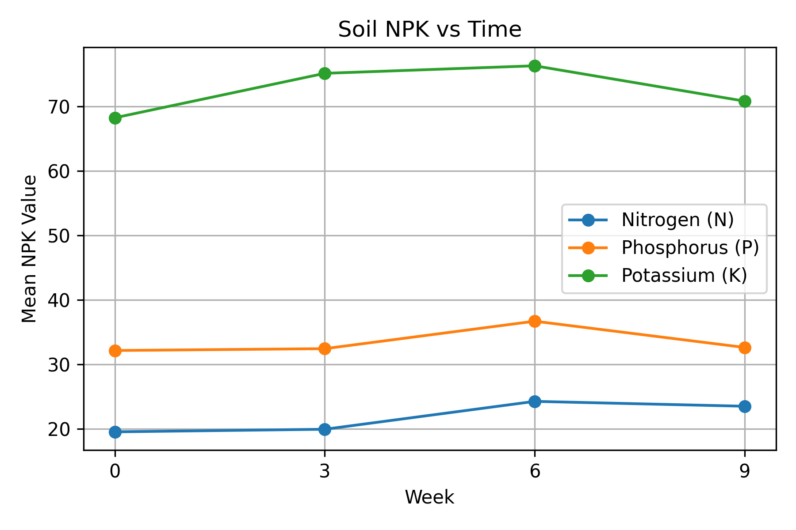

1.0 Soil Nutrient NPK Readings
This section presents the soil nutrient readings (Nitrogen, Phosphorus, Potassium) collected using the NPK sensor and stored in Firebase. The readings are organized by week and used to support interpretation of nutrient changes across the AMF treatment timeline.

Soil NPK Readings vs Time Graph
NPK Readings Table
| Plant Types | Week | Nitrogen R1 | Phosphorus R1 | Potassium R1 | Nitrogen R2 | Phosphorus R2 | Potassium R2 | Nitrogen R3 | Phosphorus R3 | Potassium R3 |
|---|---|---|---|---|---|---|---|---|---|---|
| Chilli A | 0 | 18.86 | 31.94 | 68.8 | 18.86 | 31.94 | 68.8 | 18.85 | 31.93 | 68.8 |
| 3 | 19.16 | 32.4 | 75.12 | 19.16 | 32.4 | 75.12 | 19.16 | 32.4 | 75.12 | |
| 6 | 24.32 | 36.1 | 76.37 | 24.32 | 36.1 | 76.37 | 24.33 | 36.1 | 76.36 | |
| 9 | 23.9 | 32.05 | 72.9 | 23.9 | 32.05 | 72.9 | 23.9 | 32.06 | 72.9 | |
| Chilli B | 0 | 19.46 | 32.18 | 66.1 | 19.46 | 32.18 | 66.1 | 19.46 | 32.18 | 66.15 |
| 3 | 19.67 | 31.97 | 74.98 | 19.67 | 31.98 | 74.98 | 19.68 | 31.98 | 74.98 | |
| 6 | 23.81 | 37.2 | 75.35 | 23.81 | 37.2 | 75.35 | 23.82 | 37.21 | 75.36 | |
| 9 | 23.05 | 32.6 | 70.04 | 23.05 | 32.6 | 70.04 | 23.06 | 32.6 | 70.04 | |
| Eggplant | 0 | 20.21 | 32.3 | 69.9 | 20.22 | 32.3 | 69.9 | 20.22 | 32.3 | 69.9 |
| 3 | 20.9 | 32.89 | 75.41 | 20.9 | 32.89 | 75.41 | 20.9 | 32.89 | 75.41 | |
| 6 | 24.58 | 36.76 | 77.3 | 24.58 | 36.76 | 77.3 | 24.59 | 36.76 | 77.3 | |
| 9 | 23.5 | 33.18 | 69.6 | 23.5 | 33.18 | 69.6 | 23.5 | 33.19 | 69.65 |